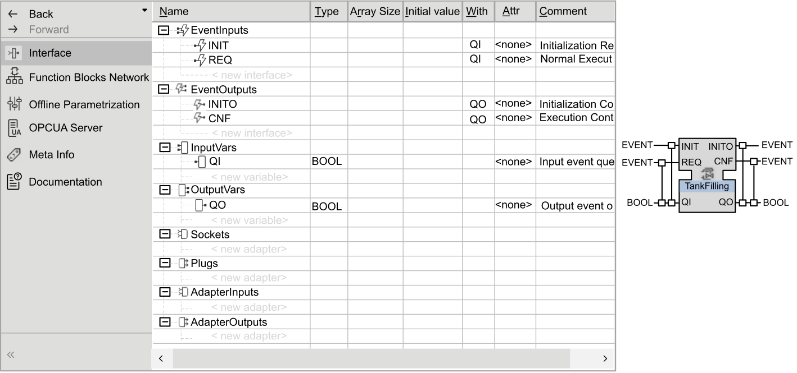
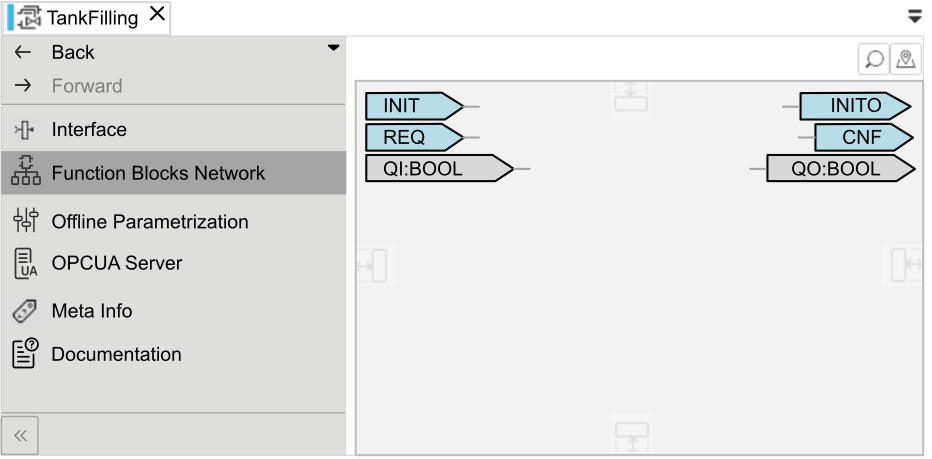
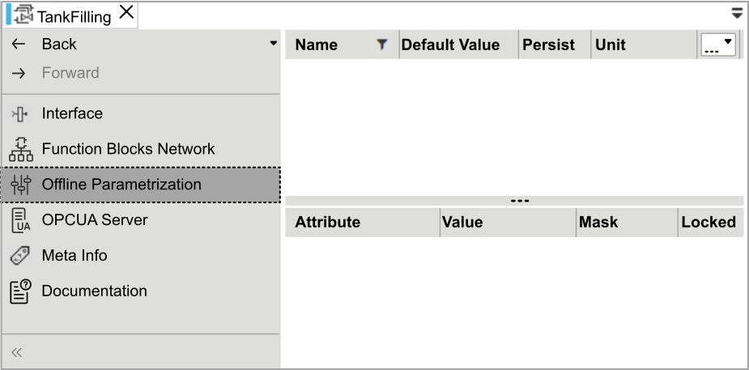
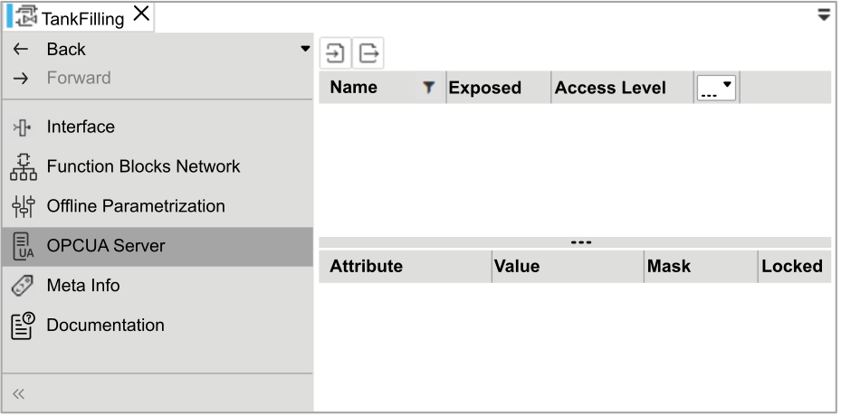

CAT Editors Overview
Once opened, the CAT gives access to several editors that will help you to customize and develop it.

|
NOTE:
The navigation inside the CAT editors list is the same as the one shown in the topic System Editor Overview. |
Interface
It is the summary page listing all events, data inputs, data outputs with their type and so on.

Function Blocks Network
It is the network of the CAT, similar to the layer TR1 in the application, where will be added all the function blocks of the sequence.

Offline Parametrization
This editor is used to define the initial value of all the parameters for each function block in the CAT. So when the CAT will be first deployed then all the parameters will take the value set here.

|
|
NOTE:
As there is no function block added into the Function Blocks Network editor then there is no parameter available yet in the Offline Parametrization editor. |
OPC UA Server
It defines the exposition status of the parameter values to the OPC UA client. This parameter will allow or not the variables to be visible by the OPC UA server.

|
|
NOTE:
As there is no function block added into the Function Blocks Network editor then there is no parameter available yet in the OPC UA Server editor. |

|
The two other editors Meta Info and Documentation are used to give background information about the CAT.
In addition to these six previous editors, you may have extra ones depending on the installation options selected while installing EcoStruxure Automation Expert. |